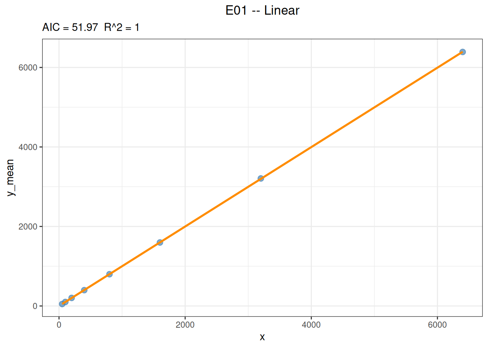

代码
library(ivdtools)
library(readr)线性（linearity）评价测量系统在整个工作范围内，测得结果与被测物浓度（或目标量值）之间是否存在 可接受的线性关系，通常采用稀释数据，按 CLSI EP06 分析偏差。本文演示如何使用 ivdtools 包的 fit_equation() 完成线性拟合、加权拟合、各水平偏差与残差评价，以及使用 fit_equation() 做 EP06-A2 风格的多项式分析，判断是否需要引入高次项。
示例数据为确定性的教学数据，仅用于演示流程；正式研究应使用方案中预先规定的稀释方案、浓度水平、 重复数与接受标准。
library(ivdtools)
library(readr)| 函数 | 主要用途 | 关键输入或输出 |
|---|---|---|
list_equation() |
查看内置方程注册表 | category、engine 过滤 |
replicate_to_mean() |
汇总重复测量并可计算权重 | "n"、"1/sd"、"1/sd^2" |
fit_equation() |
拟合内置或自定义方程 | eq、weights、lower/upper、constraints |
compare_equation() |
拟合多个候选方程并按 AIC 排序 | eqs、deltaAIC |
coef() / residuals() |
提取参数与残差 | |
predict() |
正向预测或逆向回算浓度 | inverse=TRUE、interval |
plot() |
绘制拟合曲线与区间 | interval、frame |
稀释系列包含 8 个浓度水平、每水平 3 次重复，共 24 行：
dilution <- read_csv("./data/linearity-dilution.csv", show_col_types = FALSE)
dilution <- as.data.frame(dilution)
head(dilution, 6)dim(dilution)[1] 24 3summary(dilution) conc replicate signal
Min. : 50 Min. :1 Min. : 48.6
1st Qu.: 175 1st Qu.:1 1st Qu.: 173.6
Median : 600 Median :2 Median : 595.6
Mean :1594 Mean :2 Mean :1593.0
3rd Qu.:2000 3rd Qu.:3 3rd Qu.:2004.5
Max. :6400 Max. :3 Max. :6406.9 list_equation(category = "Response") ID Name Formula Params nP Engine
-----------------------------------------------------------------------
E01 Linear a + b*x a, b 2 lm
E02 Quadratic a + b*x + c*x^2 a, b, c 3 lm
E03 ExpoGrowth a * exp(b * x) a, b 2 nls
E04 ExpoDecay a * exp(-b * x) a, b 2 nls
E05 Power a * x^b a, b 2 nls
E06 Log a + b * log(x) a, b 2 lm
E07 4PLC A + (B - A) / (1 + (x / C)^D) A, B, C, D 4 nls
E08 5PLC A + (B - A) / (1 + (x / C)^D)^E A, B, C, D, E 5 nls
E09 Gaussian a * exp(-(x - b)^2 / (2 * c^2)) a, b, c 3 nls
E10 Michaelis Vmax * x / (Km + x) Vmax, Km 2 nls
E11 Sinusoidal a * sin(b * x + c) + d a, b, c, d 4 nls
E12 Cubic a + b*x + c*x^2 + d*x^3 a, b, c, d 4 lm 线性方程对应注册表 ID E01（也接受名称 "Linear"）。
先使用 replicate_to_mean() 得到每水平均值、SD 与重复数。
rep_sum <- replicate_to_mean(dilution, x = "conc", y = "signal")
rep_sumfit_lin <- fit_equation("E01", data = rep_sum, x = "x", y = "y_mean")
print(fit_lin)E01 (Linear)
Formula: a + b*x
Call:
stats::lm(formula = frm, data = d, weights = weights)
Residuals:
Min 1Q Median 3Q Max
-4.330 -2.404 -1.439 0.430 10.364
Coefficients:
Estimate Std. Error t value Pr(>|t|)
a 0.975290 2.205878722 0.44213 0.67388
b 0.998894 0.000844269 1183.14720 < 2e-16 ***
---
Signif. codes: 0 '***' 0.001 '**' 0.01 '*' 0.05 '.' 0.1 ' ' 1
Residual standard error: 4.944 on 6 degrees of freedom
Multiple R-squared: 1.0000, Adjusted R-squared: 1.0000
F-statistic: 1.39984e+06 on 1 and 6 DF, p-value: <2e-16计算原始残差即线性偏差（实测均值与预测值）与回收偏差（实测均值与理论值）：
predict <- predict(fit_lin) x y
50 50.91999
100 100.86468
200 200.75408
400 400.53286
800 800.09044
1600 1599.20559
3200 3197.43588
6400 6393.89648lin_diag <- data.frame(
conc = rep_sum$x,
signal = rep_sum$y_mean,
predict = predict$y,
Residual = residuals(fit_lin),
Recover_bias = rep_sum$y_mean - rep_sum$x
)
print(lin_diag) conc signal predict Residual Recover_bias
1 50 49.26667 50.91999 -1.65332058 -0.7333333
2 100 100.80000 100.86468 -0.06468401 0.8000000
3 200 202.66667 200.75408 1.91258912 2.6666667
4 400 397.83333 400.53286 -2.69953130 -2.1666667
5 800 798.86667 800.09044 -1.22377212 -1.1333333
6 1600 1596.90000 1599.20559 -2.30558710 -3.1000000
7 3200 3207.80000 3197.43588 10.36411628 7.8000000
8 6400 6389.56667 6393.89648 -4.32981030 -10.4333333偏差是否可接受须与方案中预先规定的线性接受限比较。
参数说明：
fit_equation()的weights接受数值向量或内置方案"equal"、"1/y"、"1/y^2"、"1/x"、"1/x^2"、"inverse"、"inverse2"。加权与等权重的拟合都应结合残差结构、回算偏差和 预设接受标准综合比较，不能单看某一条拟合指标。
plot(fit_lin, interval = "confidence", level = 0.95)
predict(
fit_lin,
newdata = data.frame(x = c(0.5, 2, 8)),
interval = "confidence"
) x y y_ci_lwr y_ci_upr
0.5 1.474737 -3.922223 6.871698
2.0 2.973078 -2.421993 8.368150
8.0 8.966442 3.578916 14.353968由响应逆向回算浓度：
predict(
fit_lin,
newdata = data.frame(y_mean = c(650, 3300, 6500)),
inverse = TRUE
) x y
649.7434 650
3302.6777 3300
6506.2210 6500预测边界： 逆向回算应避免超出校准浓度范围外推。线性模型在范围内回算是稳定的，但在平台或 非线性区间，逆向预测对响应误差非常敏感。
数据为 5 个浓度水平 × 3 复孔：
poly_data <- read_csv("./data/linearity-polynomial.csv", show_col_types = FALSE)
poly_data <- as.data.frame(poly_data)
head(poly_data, 6)rep_sum_w <- replicate_to_mean(
poly_data,
x = "conc",
y = "signal",
weights = "1/sd^2"
)
rep_sum_w参数说明：
replicate_to_mean()的weights可选NULL（不生成权重列）、"n"、"1/sd"或"1/sd^2"（反方差加权）。权重应依据重复测量的实际方差结构或方案确定。
EP06-A2 通常比较线性、二次、三次模型，判断是否需要高次项并比较 Residual standard error：
fit_poly_lin <- fit_equation("E01", data = rep_sum_w, x = "x", y = "y_mean", weights = rep_sum_w$weights)
print(fit_poly_lin)E01 (Linear)
Formula: a + b*x
Call:
stats::lm(formula = frm, data = d, weights = weights)
Residuals:
Min 1Q Median 3Q Max
-20.993 -17.367 -5.447 16.760 27.047
Coefficients:
Estimate Std. Error t value Pr(>|t|)
a -18.00771 20.0633790 -0.89754 0.43557
b 1.01397 0.0188681 53.73983 1.4192e-05 ***
---
Signif. codes: 0 '***' 0.001 '**' 0.01 '*' 0.05 '.' 0.1 ' ' 1
Residual standard error: 24.3886 on 3 degrees of freedom
Multiple R-squared: 0.9990, Adjusted R-squared: 0.9986
F-statistic: 2887.97 on 1 and 3 DF, p-value: 1.42e-05fit_poly_qua <- fit_equation("E02", data = rep_sum_w, x = "x", y = "y_mean", weights = rep_sum_w$weights)
print(fit_poly_qua)E02 (Quadratic)
Formula: a + b*x + c*x^2
Call:
stats::lm(formula = frm, data = d, weights = weights)
Residuals:
Min 1Q Median 3Q Max
-13.443 -13.294 -13.146 8.912 30.970
Coefficients:
Estimate Std. Error t value Pr(>|t|)
a -7.14812e+00 3.09846e+01 -0.2307 0.8389994
b 9.72049e-01 8.28550e-02 11.7319 0.0071872 **
c 2.34851e-05 4.48020e-05 0.5242 0.6524439
---
Signif. codes: 0 '***' 0.001 '**' 0.01 '*' 0.05 '.' 0.1 ' ' 1
Residual standard error: 28.0077 on 2 degrees of freedom
Multiple R-squared: 0.9991, Adjusted R-squared: 0.9982
F-statistic: 1095.05 on 2 and 2 DF, p-value: 0.000912fit_poly_cub <- fit_equation("E12", data = rep_sum_w, x = "x", y = "y_mean", weights = rep_sum_w$weights)
print(fit_poly_cub)E12 (Cubic)
Formula: a + b*x + c*x^2 + d*x^3
Call:
stats::lm(formula = frm, data = d, weights = weights)
Residuals:
Min 1Q Median 3Q Max
-13.146 -2.191 -2.191 8.764 8.764
Coefficients:
Estimate Std. Error t value Pr(>|t|)
a 2.04822e+01 2.48863e+01 0.82303 0.56161
b 7.25244e-01 1.39796e-01 5.18788 0.12123
c 3.86253e-04 1.91646e-04 2.01544 0.29321
d -1.35487e-07 7.07339e-08 -1.91545 0.30631
Residual standard error: 18.3308 on 1 degrees of freedom
Multiple R-squared: 0.9998, Adjusted R-squared: 0.9992
F-statistic: 1705.48 on 3 and 1 DF, p-value: 0.0178